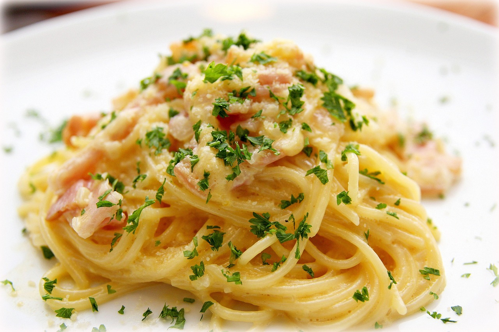

Paste Carbonara
Apasa aici pentru a te intoarce la meniul acasa.

Pastele sau Spaghete Carbonara este încă o mâncare pe care o știam mai mult din meniurile restaurantelor, dar uite cum trece timpul și îți dai seama că de fapt este o mâncare f. simplă și deosebit de gustoasă, mare păcat să nu o faceți și acasă.
Pentru a prepara Pastele Carbonara aveti nevoie de urmatoarele ingrediente:
Ingrediente
- 500 g paste
- 4 oua
- 250 ml smantana de gatit
- 100g bacon
- 2 buc usturoi
- sare
- piper
- parmezan
Mod de preparare:
- Intr-un bol se bat gălbenușurile cu smântâna dulce, sare și piper.
- Baconul se taie julien, usturoiul se mărunțește bine.
- Fierbeți pastele conform instrucțiunilor de pe cutie - în mod normal, fierbeți apa cu sare, adăugați pastele și aveți grijă să nu le răsfierbeți.
- Când sunt gata le scurgeți de apă și lăsați deoparte.
- Acum repede puneți baconul într-o tigaie încinsă bine, amestecați periodic.
Luați 2-3 linguri din baconul rumenit și lăsați la o parte, pentru a orna farfuriile.
- După ce se rumenesc bine și lasă grăsime, adăugați usturoiul - mai lăsați 1 minut și amestecați periodic.
- Puneți pastele în tigaia cu bacon, amestecați bine și mai lăsați 2-3 minute pe foc. Asta se face ca să încălziți pastele care între timp puțin se răcesc.
- Imediat turnați amestecul de gălbenușuri cu smântână și amestecați bine.
- Și gata, le serviți imediat, presărate cu brânză(parmezan de preferat:), puțin piper măcinat și acele bucățele de bacon prăjit lăsate la o parte.
Pofta mare!